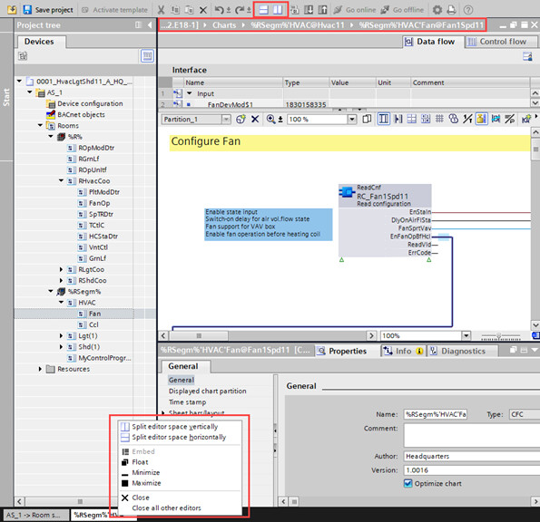
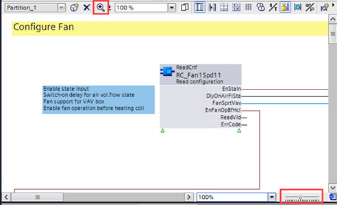

使用房间分段编辑器
这Room segment编辑器是您的主要工作区域。
Adjust the size of the Programming editor
- Click the Split editor space horizontally icon in the toolbar of the Programming editor to display two individual editors aligned horizontally.
- Click the Split editor space vertically icon in the toolbar to display two individual editors aligned vertically.
- Double-click the header of the chart to maximize it. Double-click the header again to return the Programming editor to its original size.
- Right-click an open chart at the bottom of the Programming editor and select an entry.

Zoom in on a chart
放大图表有两种方法：
- In the Programming editor, select the zoom control, hold and move it to the right to zoom in on the chart and to the left to zoom out of the chart.
- In the Programming editor, use the icon to zoom in on the chart.

Add a control program
在项目导航视图中，您可以添加控制程序。
- In Project navigation view, click room segment folder %RSegm%.
- In Room segment editor, click Add control program.
- Type an Application name and Myname in the dialog and confirm with OK.
- The new chart is placed below the room segment folder %RSeg% and the Room segment editor is opened.